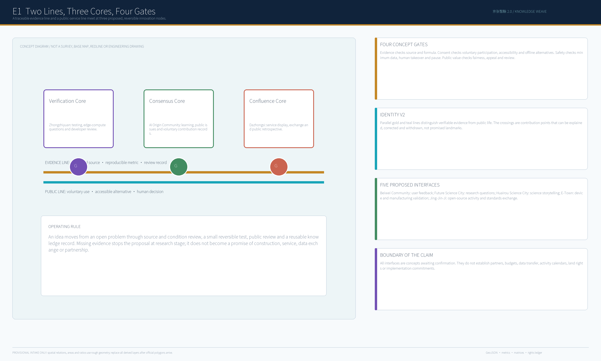
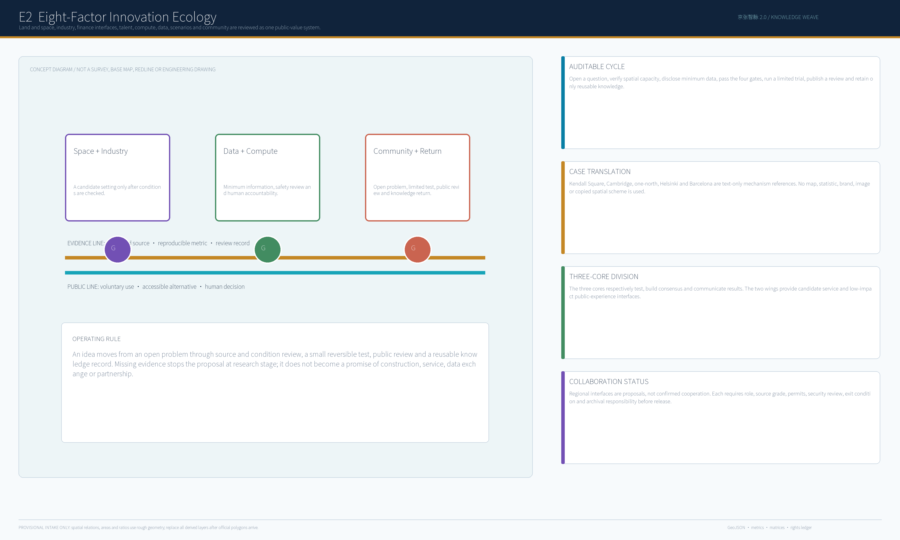
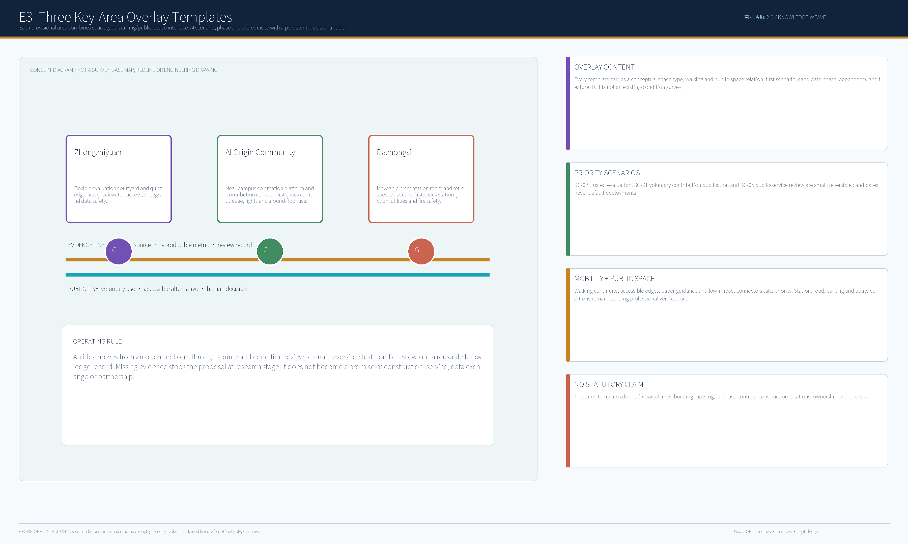
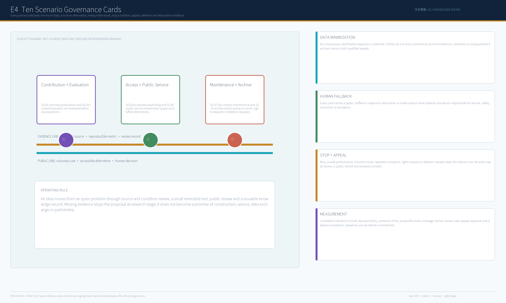
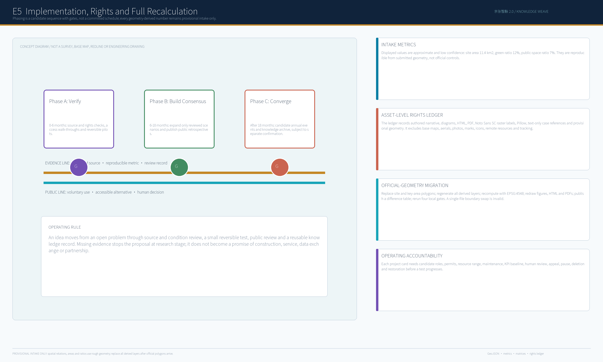

Core Metrics and Boundary Status
Each value is reproducible from the submitted provisional geometry with low confidence. It is not an official area or statutory indicator; official polygons require a full package recomputation.
Four Concept Gates
Evidence
Source grade, spatial condition, formula and version record.
Consent
Voluntary participation, accessibility and non-digital alternative.
Safety
Minimum data, human takeover, incident response and pause.
Public Value
Fairness, appeal, public review and knowledge return.
Overview, Ecology and Interfaces


Key Areas, Mobility and AI Scenarios


Implementation, Rights and Recalculation
